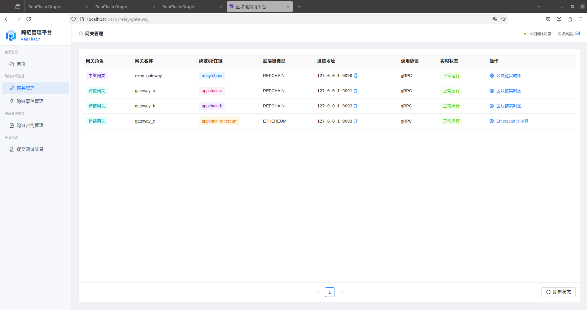
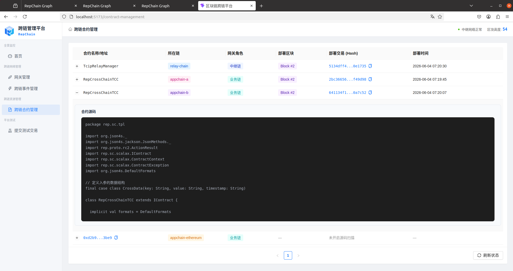
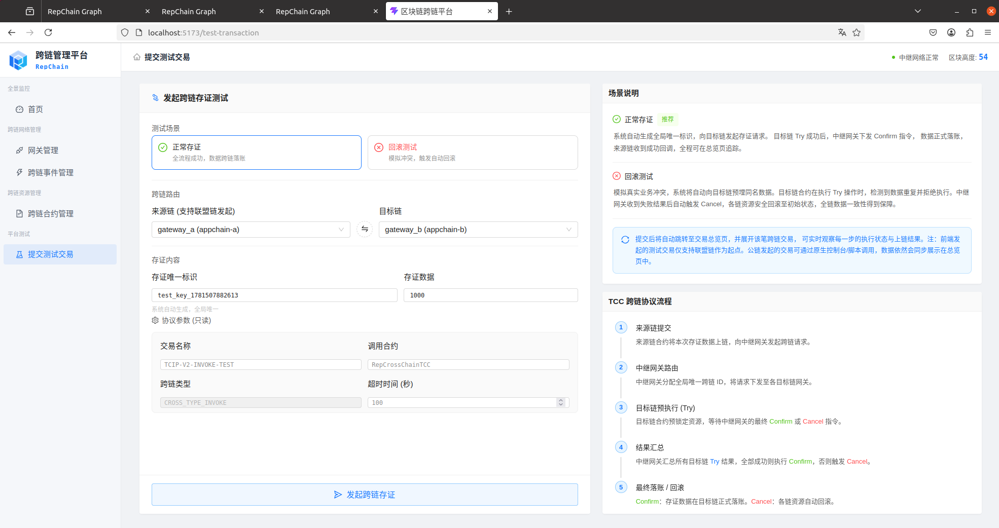
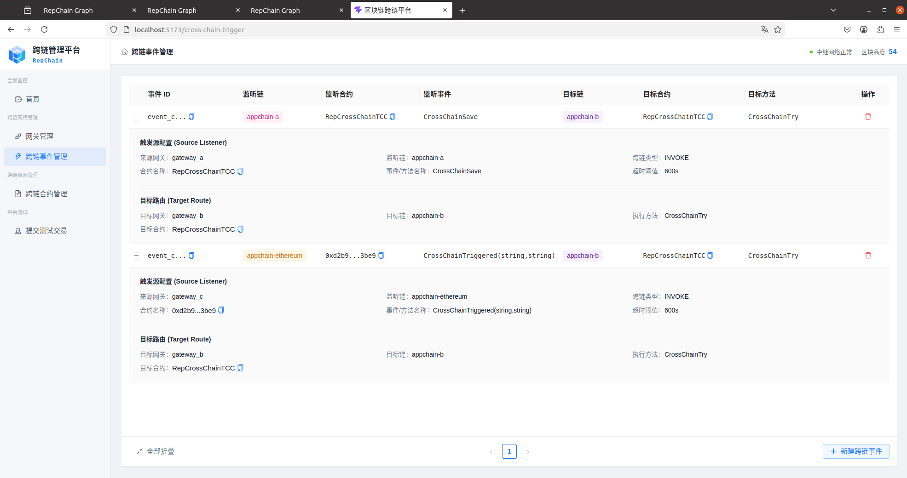

RepChain跨链平台relayHub部署与用户手册
1. 系统部署指南
本章节介绍系统各组件的网络拓扑配置、敏感信息注入及标准化启动流程。
1.1 前置运行环境
1.1.1 基础环境与存储
- 基础环境：JDK 11 或更高版本。
- 架构约束：中继跨链架构中，目前中继链仅支持部署在 RepChain 上，以太坊等公链/其他联盟链仅可作为业务链接入。
- 存储与权限：程序启动用户的执行目录必须具备读写权限。系统会在运行时自动生成以下 LevelDB 持久化目录，目录删除以后将失去网关数据：
./data/db（中继网关状态数据）./data/gateway_db（RepChain 网关状态数据）./data/eth-gateway-db（以太坊网关状态数据）
1.1.2 网络与端口连通性总表
配置指引：以下清单基于系统标准的本地集群示例。实际部署时，请务必以各组件
config/application.yml中的配置为准，并确保防火墙策略放行了相应的端口。
网络拓扑与端口映射表
| 组件名称 | **对外暴露端口 ** | 需要访问的目标 | 连通性说明 |
|---|---|---|---|
中继网关 tcip-rep-relayer |
8000 (REST) 9090 (gRPC 枢纽) |
127.0.0.1:19081 (中继链底层节点) |
核心节点：必须放行 9090 端口，以便所有的业务网关都能连入。同时它自身必须能访问 19081 节点来同步中继链区块。 |
| 业务网关 A/B (RepChain) | 8001 / 8002 (REST) 9091 / 9092 (gRPC) |
20081 / 21081 (对应底链节点) 9090 (中继网关) |
联盟链节点：监听 909x 是为了接收中继网关下发的 Confirm/Cancel 回调指令；同时它必须能连通自己的底链节点和中继网关。 |
| 业务网关 C (以太坊) | 8003 (REST) 9093 (gRPC) |
Alchemy/Infura 公网节点 (HTTPS 与 WSS) 9090 (中继网关) |
公链节点：监听 9093 供中继回调。由于对接的是公网测试网，服务器必须具备访问外网的能力，且必须同时支持 HTTP 与 WebSocket 通道。 |
管理平台 Portal-BFF |
9000 (后端 API) |
8000 - 8003 (各网关的 REST 端口) |
前端接口：负责为 Web 界面提供数据，它不需要连 gRPC，但必须能连通上述所有网关的 800x 端口。 |
1.2 标准部署目录结构参考
为了确保系统能正确读取外部配置文件及证书，建议按照以下目录规范进行组织。各个网关应当运行在独立的目录（或独立的容器）中。
以下为一个标准的本地测试集群（1个中继网关 + 2个联盟链网关 + 1个公链网关）的物理目录拓扑：
gateway-deploy/
├── secrets.env # 全局环境变量文件（存放私钥与密码，启动前 source 注入）
├── relayer/ # 中继网关目录
│ ├── config/ # 外部配置文件夹
│ │ ├── application.yml # 覆盖内部默认配置的生产参数
│ │ └── certs/
│ │ └── relayer_private.pem # 中继网关签名私钥
│ ├── data/db/ # 运行时自动生成的 LevelDB 目录（不可删）
│ ├── logs/ # 运行时自动生成的日志目录
│ └── tcip-rep-relayer-*.jar # 核心运行程序
├── gateway-a/ # 业务网关 A (RepChain)
│ ├── config/
│ │ ├── application.yml
│ │ ├── init-events.json # 自动装载的跨链事件触发规则
│ │ └── certs/
│ │ └── gateway_private.pem # 网关 A 签名私钥
│ ├── data/gateway_db/
│ └── tcip-rep-repchain-*.jar
└── gateway-c/ # 业务网关 C (以太坊)
├── config/
│ ├── application.yml
│ └── init-chain-configs.json # 自动装载的以太坊合约 ABI 与地址配置
├── data/eth-gateway-db/
└── tcip-rep-ethereum-*.jar
相对路径说明：YAML 配置文件中的路径（如
path: "./data/gateway_db"或pem-file: "config/certs/gateway_private.pem"）均是以.jar文件所在目录为当前工作目录计算的。
1.3 核心配置规范
系统设计遵循外部配置优先原则。各 JAR 包同级目录下存在 config/ 目录，并放置 application.yml 进行参数覆盖。
1.3.1 敏感信息隔离
所有涉及资产权限的私钥与密码不建议以明文写入配置文件，而是通过操作系统环境变量注入。在config/application.yml中使用 Spring Boot 占位符语法引用环境变量：
# 示例：RepChain 网关私钥密码
repchain:
private-key:
password: ${GATEWAY_KEY_PASSWORD}
# 示例：以太坊网关私钥和API Key
ethereum:
rpc-url: ${GATEWAY_ETH_RPC_URL}
ws-url: ${GATEWAY_ETH_WS_URL}
credentials:
private-key: ${GATEWAY_ETH_PRIVATE_KEY}
可以采用两种方式注入使用，其中，不同实例需要使用独立的环境变量名称：
- 优先选择
secrets.env方式。在部署目录下维护统一的secrets.env文件集中定义环境变量，在启动网关前执行source secrets.env
# secrets.env
RELAYER_KEY_PASSWORD=your_password
GATEWAY_A_KEY_PASSWORD=your_password
GATEWAY_B_KEY_PASSWORD=your_password
GATEWAY_C_ETH_PRIVATE_KEY=your_private_key
ETH_RPC_URL=https://eth-mainnet.rpc.provider/v2/YOUR_API_KEY
ETH_WS_URL=wss://eth-mainnet.ws.provider/v2/YOUR_API_KEY
- 在控制台或脚本里逐条
export，例如export GATEWAY_A_KEY_PASSWORD=your_password
1.3.2 中继网关核心配置
需要确认底层节点连通性与自身中继服务的暴露地址。
repchain:
# 指向中继链底层节点的 REST API 地址
host: "127.0.0.1:19081"
identity:
# 填写中继网关在中继链上合法注册的身份凭证
credit-code: "identity-net:121000005l35120456"
cert-name: "node1"
gateway:
# 本中继网关对外暴露的 gRPC 枢纽地址，业务网关将连接此地址
address: "127.0.0.1:9090"
1.3.3 业务跨链网关配置
业务网关配置的重点在于确立全局唯一性身份，并正确指向中继网关。以下以以太坊网关为例（RepChain 网关同理）：
ethereum:
# 指向该网关所挂载的业务链底层节点地址（仅以太坊网关包含）
rpc-url: "https://eth-sepolia.g.alchemy.com/v2/..."
ws-url: "wss://eth-sepolia.g.alchemy.com/v2/..."
gateway:
# 该网关在中继体系中的全局唯一ID，不可与其他网关重复，必须与中继端注册信息绝对一致
gateway-id: "2"
# 所代表的网络资源标识
chain-rid: "appchain-ethereum"
relay:
# 必须指向 1.2.2 中继网关的 gRPC 地址
address: "127.0.0.1:9090"
1.3.4 管理平台核心配置
管理平台需要通过配置连接底层网关。请修改 tcip-rep-portal-bff/config/application.yml：
bff:
# 必须设置为 real 才能连接真实网关（mock 为前端调试模式）
mode: real
relayer:
# 必须指向中继网关的 REST API 与 gRPC 枢纽地址
url: "http://localhost:8000"
name: "relay_gateway"
grpc-address: "127.0.0.1:9090"
# 必须指向中继链底层的实时区块可视化地址（用于前端跳转）
explorer-url: "http://127.0.0.1:19081"
gateways:
# 数组列表：需在此处穷举所有已接入的业务网关
- id: "0" # 必须与网关自身的 gateway-id 一致
name: "gateway_a"
url: "http://localhost:8001" # 必须指向该网关的 REST API 端口
chain-rid: "appchain-a"
grpc-address: "127.0.0.1:9091"
tx-verify-type: "rpc"
chain-type: "CHAIN_TYPE_REPCHAIN" # 区分RepChain与以太坊
explorer-url: "http://127.0.0.1:20081" # RepChain底层地址
- id: "2"
name: "gateway_c"
url: "http://localhost:8003"
chain-rid: "appchain-ethereum"
grpc-address: "127.0.0.1:9093"
tx-verify-type: "spv" # 根据以太坊网关的实际验证模式填写
chain-type: "CHAIN_TYPE_ETHEREUM" # 区分RepChain与以太坊
explorer-url: "https://sepolia.etherscan.io" # 以太坊浏览器路径
# 以太坊特有配置：由于公链无法通过统一接口动态扫描部署时间，需手动补齐用于前端展示
static-contracts:
# 注意：此处必须填写 0x 开头的真实合约地址
- contract-name: "0x在此替换为您实际部署的以太坊代理合约地址"
tx-id: "0x在此替换为部署该合约时的交易Hash"
block-height: 1234567 # 替换为实际部署所在的区块高度
deploy-time: "YYYY-MM-DD HH:mm:ss" # 替换为实际部署时间
1.4 标准启动顺序
跨链平台在启动时具有严格的依赖时序，您可以参考项目提供的自动化脚本，或按以下顺序列操作：
-
启动底层节点网络：启动 RepChain 节点，等待网络共识建立完毕（联盟链通常需等待数十秒以完成创世块落盘）。
-
部署智能合约：通过 RCJava 或 Hardhat 工具链，将中继主合约与业务跨链合约部署至对应的底层网络中。
-
启动网关集群：依次启动中继网关（Relayer）与各业务跨链网关。若有统一部署目录，也可通过执行自动化脚本拉起整个集群。
-
验证 gRPC 通道：向任意业务网关发送探活请求：
curl http://localhost:8003/v1/cross-chain/ping
若返回包含当前时间戳的 JSON 响应，则证明底层 gRPC 通道握手成功。
- 启动管理平台并访问：分别启动 Portal 平台的后端 BFF 服务与前端 Web 项目（如通过
pnpm dev）。完成后，在浏览器中打开前端本地地址（默认通常为http://localhost:5173），即可进入可视化控制台。
1.5 源码获取与自行编译（可选）
若您的实施环境是从开源仓库代码开始构建全套系统，而非使用预编译发布包，请按照本节的多仓库结构进行全局编译。编译完成并成功部署合约以后，再根据配置文件中的端口设置进行连通性测试。
前置环境：
- 后端构建：Maven 3.6+
- 前端构建：Node.js 18+ 与 pnpm
- 版本控制：Git
1.5.1 拉取与编译核心网关组件 (tcip-rep)
核心网关项目通过 Git Submodule 聚合了 ethereum、relayer、repchain、common 和 proto 五个子模块。
# 1. 克隆主仓库并初始化所有子模块
git clone --recurse-submodules https://gitee.com/tcip-rep/tcip-rep.git
cd tcip-rep
# 2. 触发全局构建（跳过测试与 Scala 原生代码重生成）
mvn clean package -Dscalapbc.skip=true -DskipTests
构建完成后，各网关的可执行 .jar 包将生成在对应子模块的 target/ 目录下。
1.5.2 拉取与编译管理平台 (tcip-rep-portal)
管理平台独立于网关组件，采用前后端分离架构，需要分别编译 BFF 层与 Web 层。
# 1. 克隆管理平台仓库
git clone https://gitee.com/tcip-rep/tcip-rep-portal.git
cd tcip-rep-portal
# 2. 构建后端 BFF 服务 (Spring Boot)
cd tcip-rep-portal-bff
mvn clean package -DskipTests
# 产物位置: target/tcip-rep-portal-bff-*.jar
# 3. 构建前端 Web 服务 (React)
cd ../tcip-rep-portal-web
pnpm install
pnpm build
# 产物位置: dist/ 目录 (生成静态文件，可交由 Nginx 托管)
运行提示：
tcip-rep-portal-bff编译出的 jar 包需要单独运行（java -jar），其配置依赖application.yml中的bff.gateways映射。前端静态文件dist/需配置 Web 服务器代理至 BFF 的 9000 端口。
1.5.3 智能合约 (tcip-rep-contracts)
可用的合约工程独立存放于 tcip-rep-contracts 仓库中，您需要自行将合约部署到目标链，并完成对应配置。
1. RepChain 合约部署
可以使用 RCJava SDK 进行部署。由于 RepChain 的 DID 权限机制，操作须包含三步：部署合约、注册方法、授权网关身份。
- 配置说明：部署完成后，网关会自动从
config/init-events.json（事件触发规则）中读取合约名称进行路由，无需在网关做额外的全局地址配置。
2. 以太坊合约部署
可以使用 Hardhat 等工具链部署 EthCrossChainTCC 代理合约（UUPS 模式）。
- 部署约束：由于
EthCrossChainTCC代理合约代码层面实现了权限校验，在初始化代理合约时，必须将网关的账户地址（需与application.yml中配置的私钥对应）作为参数传入，以赋予网关回调写权限。 - 配置说明：部署成功后，需要将生成的代理合约地址（0x...）填入以太坊网关的
config/init-chain-configs.json文件中。
2. 跨链管理平台操作手册
本章节介绍通过 Web 控制台完成跨链的相关配置，执行跨链业务。
2.1 构建跨链通道
完整的跨链业务通道建立包括以下四个标准化步骤：
- 网关与链资源检查：进入 [网关管理]，确认中继网关与业务链网关均处于
正常运行状态，名称、绑定/所在链等信息加载正确。
提示：若网关未显示或持续显示离线，请首先检查 Portal-BFF 后端文件
application.yml中的bff.gateways列表是否正确映射了底层网关的 REST 端口与 ID。
- 智能合约确认：进入 [跨链合约管理]，查看 RepChain 上的跨链业务合约RepCrossChainTCC是否已正确显示，且点击可以实时获取合约代码。
提示：联盟链 (RepChain) 的智能合约信息是根据跨链事件规则中填写的合约名称动态获取的，新建正确的事件规则后平台会自动拉取。若未能正确显示，说明网关连接异常或合约名称填写错误。而公链合约受限于网络特性，是通过管理平台后端
application.yml中的static-contracts静态装载展示的，请确保该配置项的合约地址填写正确。
-
建立事件规则：进入 [跨链事件管理]，新建跨链事件规则。选择源网关与目标网关，配置需监听的合约、方法名以及目标链的目标合约和执行方法等信息。
-
提交测试交易：进入 [提交测试交易] 填写存证数据，平台将自动跳转到 [首页] 面板，可查看新交易的状态流转轨迹。
2.2 页面操作指引
2.2.1 网关管理
提供跨链底层网络基础设施的全局状态监控与拓扑可视化。

- 统一展示当前系统所接入的中继网关与所有业务跨链网关。正常情况下，各网关卡片应显示绿色的
正常运行状态指示。 - 若网关状态显示为
离线或持续处于加载状态，代表平台与底层网关失联。此时应优先核对 BFF 后端的application.yml配置文件（即bff.gateways列表中的端口映射是否正确），并确认服务器防火墙已放行相关端口。
2.2.1 跨链合约管理
提供多链架构下的智能合约可视化管理。

- RepChain：直接点击列表行展开，即可查看完整的合约源码。
- 以太坊：受限于 EVM 源码验证机制，控制台不直接拉取源码。展开行会提供引导提示，点击按钮可跳转至 Etherscan 浏览器的 Contract 标签页查看实时 ABI 与源码。
2.2.2 跨链事件管理
定义底链数据交换路由的核心模块。

- 标准 TCC 跨链模板：默认开启。选择源与目标网关后，系统会基于
CHAIN_TYPE自动装填底层协议所需的全部握手参数（包含固定合约名、事件签名及回调映射），参数和默认合约的代码逻辑一致。
2.2.3 提交测试交易
提供跨链状态机的闭环验证工具。

- 验证场景：
- 正常存证 (HAPPY)：验证正常情况下的
Try -> Confirm正向落账流程。 - 回滚测试 (CANCEL)：系统提前在目标链存储当前填写的存证数据，导致跨链过程中在检查目标链数据时产生键冲突，从而触发目标链预执行失败。用于验证中继网关是否能准确捕获异常并向所有节点下发
Cancel补偿指令，保证最终一致性。 - 发起端限制：当前控制台的自动签名机制仅支持 RepChain 作为跨链测试的源链。若需测试 以太坊 -> RepChain 的链路，请通过 Hardhat 等工具链对部署在以太坊上的
CrossChainSave方法进行调用，事务状态将自动同步至 Dashboard。 - 为满足目标链 Scala 端的反序列化需求，调用以太坊合约时传入的
payload参数必须是序列化后的特定 JSON 数组字符串。结构必须包含key、value和timestamp。示例：'[{"key":"eth2rep_001", "value":"跨链数据内容", "timestamp":"2026-06-11T12:00:00.000Z"}]'若传入普通字符串，网关解析将报错并导致跨链事务失败。具体参数以部署的合约代码为准。
2.2.4 首页
提供全局跨链大盘数据与 TCC 状态机的可视化追踪，是日常运行监控与异常排障的核心面板。

- 状态流转：直观展示一笔跨链业务从发起、执行到最终落账的完整生命周期。
- 交易追踪：点击展开任意单条跨链记录，可查看该跨链事务在各个阶段在源链、目标链和中继链上产生的相关真实底层交易哈希。可点击哈希前往对应链的区块浏览器进行查看。